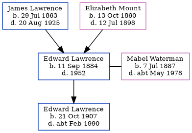

Edward James S Lawrence 1884 - 1952
[ Home ] | [ Calendar ] | [ Surnames Index ] | [ Census Index ] | [ Family History ]A general builder's laborer and the child of James Lawrence (an agricultural laborer) and Elizabeth Mount (a domestic servant), Edward Lawrence, the great-uncle of Nigel Horne, was born in St Lawrence, Thanet, Kent, England on Sep 11, 18841,2,3,4,5, was baptized there on Nov 11, 1884 and married Mabel Waterman (with whom he had 1 child, Edward Douglas) in Thanet, Kent, England around Nov 19066.
During his life, he was living at 10 Claremont Gardens, Ramsgate, Kent on Apr 5, 18919; at 2 Lyle Terrace, St Lawrence in Thanet on Mar 31, 190111; at 2 Clifton Road, St Lawrence in Thanet on Apr 2, 191110; and at 22 Grosvenor Road, Ramsgate, Kent in 19358, in 19367 and on Sep 29, 19393.
He died in 1952 in Thanet4 (oct/Nov/Dec).
Parents
- James was born on Jul 29, 1863
- Elizabeth Ann was born on Oct 13, 1860
Children
- Edward Douglas was born on Oct 21, 1907
Citations
- 1891 England Census Online publication - Provo, UT, USA: The Generations Network, Inc., 2005.Original data - Census Returns of England and Wales, 1891. Kew, Surrey, England: The National Archives of the UK (TNA): Public Record Office (PRO), 1891. Data imaged from The National
- 1901 England Census Online publication - Provo, UT, USA: The Generations Network, Inc., 2005.Original data - Census Returns of England and Wales, 1901. Kew, Surrey, England: The National Archives of the UK (TNA): Public Record Office (PRO), 1901. Data imaged from the National
- 1939 Register - Findmypast (was the head of the household)
- England & Wales, Death Index: 1984-2005 Online publication - Provo, UT, USA: The Generations Network, Inc., 2007.Original data - General Register Office. England and Wales Civil Registration Indexes. London, England: General Register Office. © Crown copyright. Published by permission of the Cont
- England & Wales, FreeBMD Birth Index, 1837-1915 Online publication - Provo, UT, USA: The Generations Network, Inc., 2006.Original data - General Register Office. England and Wales Civil Registration Indexes. London, England: General Register Office. © Crown copyright. Published by permission of the Cont
- England & Wales marriages 1837-2008 - Findmypast
- 1936 Kelly's Thanet Directory
- 1935 Kelly's Thanet Directory
- 1891 England, Wales & Scotland Census - Findmypast (was age 7 and the son of the head of the household)
- 1911 Census for England & Wales - Findmypast (was age 26 and the head of the household)
- 1901 England, Wales & Scotland Census - Findmypast (was age 16 and a nephew in the household)
Media
1936 Kelly's Thanet Directory

1935 Kelly's Thanet Directory

England & Wales deaths 1837-2007 - BMD/D/1952/4/AZ/000629/134
1939 Register Transcription - TNA-R39-1767-1767C-002-37
England & Wales births 1837-2006 - BMD/B/1884/4/AZ/000344/114
1891 England, Wales & Scotland Census - GBC/1891/0005908273
England & Wales marriages 1837-2008 - BMD/M/1906/4/AZ/000239/028
1901 England, Wales & Scotland Census - GBC-1901-0007458471
Family Tree
Generated by ged2site. Last updated on Jun 11, 2024